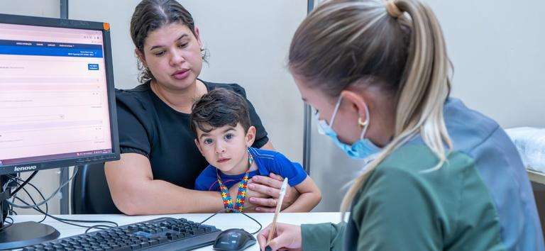

O Gargalo na Atenção Primária

Cenário Regional: O Piauí ocupa a posição de 2º estado com maior índice de recorrência de transtornos do neurodesenvolvimento no Brasil, com uma estimativa de 38 mil indivíduos com TEA na região.
O Gargalo da Enfermagem em Teresina: Uma pesquisa quantitativa com enfermeiros da atenção primária na capital revelou dados alarmantes sobre a "porta de entrada" do SUS:
95,2% dos enfermeiros consideram que o conhecimento recebido na graduação sobre o autismo foi insuficiente;
100% desses profissionais relataram nunca ter recebido capacitação específica ofertada pelo serviço de saúde sobre o tema;
85,7% não conhecem instrumentos básicos de triagem, como o protocolo M-CHAT.
A Identidade no Adolescente: O diagnóstico tardio, comum no estado devido ao gargalo na saúde, é sentido como uma "bomba". Na adolescência, isso gera crises de identidade e o fenômeno do masking — o esforço exaustivo de camuflar traços neurodivergentes para tentar se encaixar socialmente, o que resulta em altos índices de depressão e ansiedade.
O Momento do Diagnóstico: As famílias descrevem o recebimento do laudo como a sensação de que "o chão se abriu", evidenciando o luto pelo filho idealizado e a falta de suporte emocional imediato por parte do sistema de saúde.